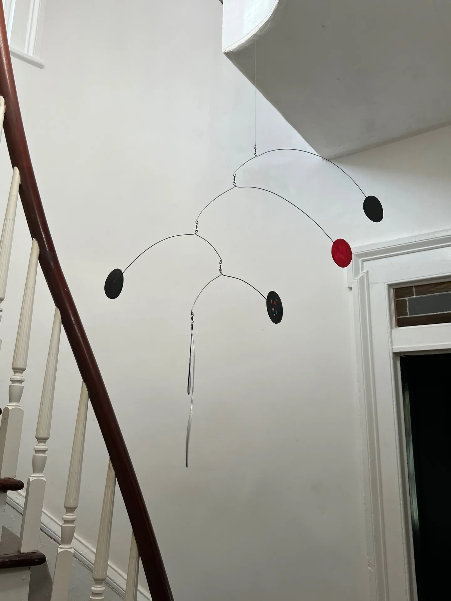

1 / 2
Simple Mobiles
Stairwell Study
A cascading study in black, white, and red whose small balanced arms activate the vertical volume of a stairwell.
Contact for priceAvailability on request
Inquire